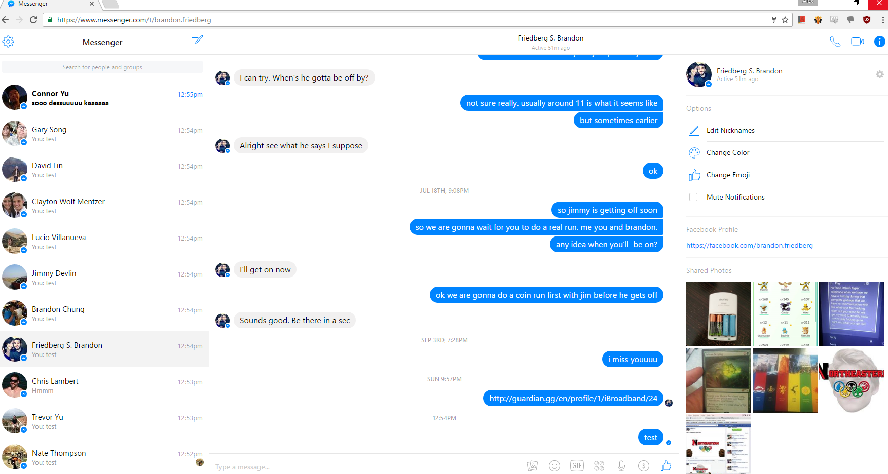
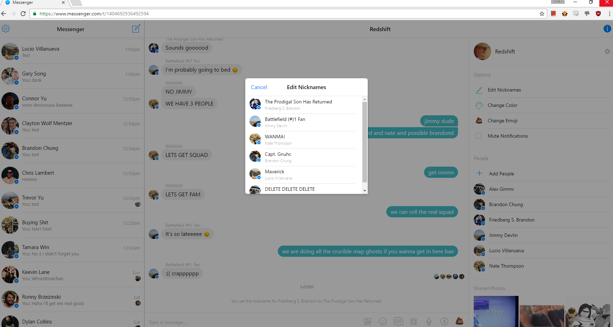
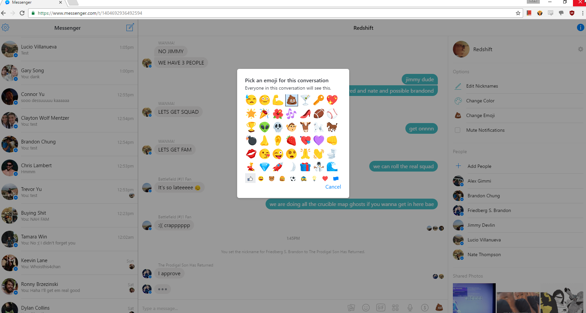
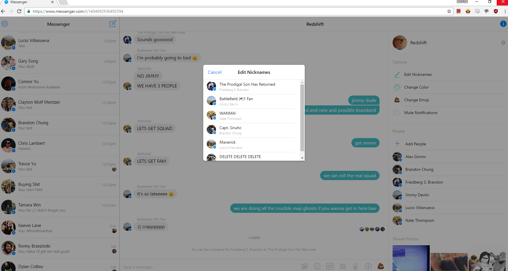
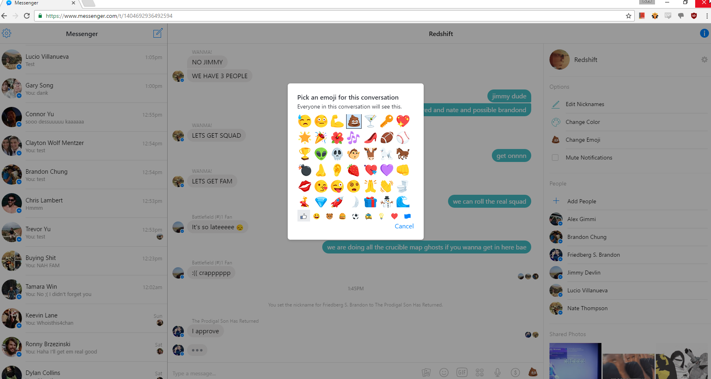

Welcome to Alex Gimmi's personal webpage.
This page was generated using GitHub Pages. Here you will find all of my HCI assignments for the semester. You can check out all my work on my GitHub, @iBroadband. It is a work in progress...
Why alexgim.me?
Well... the .mi domain doesn't exist yet, so I was forced to settle for less. The .me domain was unfortunately the best I could do. People spell it incorrectly this way all the time anyway.
HCI Individual Assignment 2
Find 2 examples of good user interface design, and 2 examples of bad user interface design.
Your examples should be specific. It's very hard to find a large interface that's completely good or completely bad, so don't try. Instead, focus on a particular feature or aspect of a user interface that makes your case. Avoid fuzzy words like “intuitive” and “user-friendly”. Find concrete reasons for your judgment.
You aren't limited to desktop software. Web sites offer many great candidates for fame and shame. You aren't even limited to traditional computer interfaces. Feel free to go out into the real world, and consider consumer appliances, car dashboards, building entrances, traffic intersections, shower controls, etc.
Your report should include 2 good examples and 2 bad examples. For each example:
- describe the purpose of the overall interface
- describe the particular aspect you find good or bad
- explain why it's good or bad (please make explicit reference to the principles covered on 9/8: visibility, mapping, feedback, consistency, etc).
- if bad, speculate why it might have been designed that way, and suggest a better design if possible
- illustrate with screenshots or photographs
The Good: Facebook Messenger
I personally really enjoy using Facebook Messenger. There are a few things that it does better than other messaging clients, but for the most part it is like the competition. However, it isn't the functionality that I enjoy the most from Messenger, it's the user experience. Creating new messages to new people is exteremely simple, as is creating a new group of friends to start a conversation with. Here is what users see when they first log in to the service.

One aspect of Facebook Messenger that is very good is it's capability for group messaging. It is both internally and externally consistent with common group conversation applications. Messenger allows you to add as few or as many people to the conversation as you'd like, and you don't need to be Facebook friends with them to do so. Here are a few things that make Messenger really stick out from the competition:
- Simple Design It look nice and it is very easy to navigate the application.
- User Control and Freedom For group conversations, I can easily add, remove, or edit members of the group.
- Quick User Feedback When a message is sent or received, a nice sound effect is played.
- Speak the User's Language The page uses extremely simple words. There is never a setting you don't understand.
- Prevent Errors In all my time using this application I have never once run into a system error.
 



The Bad: Sadhana Boston
- FIRST BAD THING
- Second bad thing
Support or Contact
Contact me at contact@alexgim.me